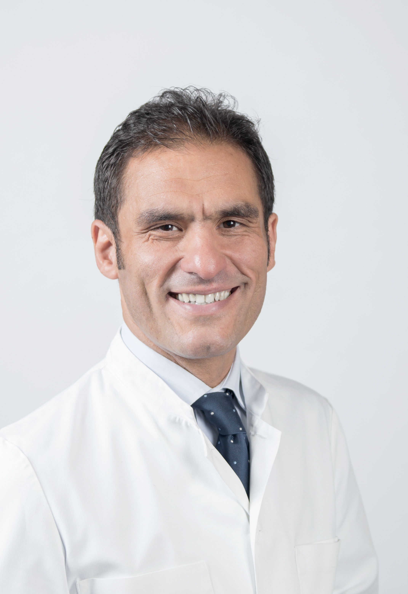
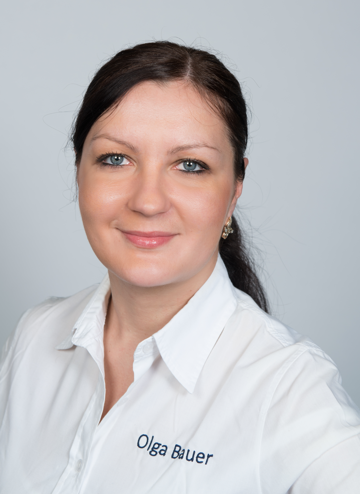

Praxis für Zahnheilkunde
ERTAN ERDOǦAN
ZAHNÄRZTE:
Ertan Erdoğan
Zahnarzt und Chef der Praxis

Ertan Erdoğan,
Zahnarzt
Tätigkeitschwerpunkte:
Implantologie, Kinderzahnheilkunde und Ästhetische Zahnheilkunde
Biographie
1995 – 2001 Studium der Zahnheilkunde an der Universität Hamburg
2001 Prädikatsexamen
2001 - 2003 Weiterbildungsassistent bei Dr. Rüdiger Ahlers in Hannover
2003 – 2005 Weiterbildungsassistent bei Dr. Krawinkel in Hamburg,
intensive Tätigkeit auf den Gebieten der Implantatchirurgie und Implantatprothetik
seit 01.09.2005 niedergelassen in Hamburg-Eidelstedt
2003 Auszeichnung für die beste wissenschaftliche Posterpräsentation der Deutschen Gesellschaft für Kinderzahnheilkunde
seit 2003 Promotionsarbeit an der Klinik für Zahnärztliche Prothetik des Universitätsklinikums Hamburg-Eppendorf mit dem Titel „Kariesrikodiagnostik mittels Bestimmung der Milchäurebildung- eine prospektive Studie“
seit 2004 Autorentätigkeit auf den Gebieten der Kinderzahnheilkunde und der Wurzelbehandlung
seit 2006 Nationale und internationale Referententätigkeit auf den Gebieten der Implantatchirurgie und Implantatprothetik sowie der Ästhetischen Zahnheilkunde (insbesondere Abdrucktechniken und provisorische Versorgungen)
2008 Mitarbeit an der Entwicklung der „Kariestherapie ohne Bohren“
2008 und 2009 Auszeichnung der Senatskanzlei für ehrenamtliches Engagement im Rahmen des “Motivationsworkshops erfolgreicher Hamburger und Hamburgerinnen”, überreicht durch die zweite Bürgermeisterin und Senatorin Christa Goetsch
Herr Zahnarzt Erdogan ist Mitglied in folgenden Gesellschaften
• Deutsche Gesellschaft für Implantologie (DGI)
• Deutsche Gesellschaft für Kinderzahnheilkunde (DGK)
• Deutsche Gesellschaft für Ästhetische Zahnheilkunde (DGAEZ)
• Deutsche Gesellschaft für Zahn-, Mund- und Kieferheilkunde (DGZMK)
• Goethe-Gesellschaft Hamburg
Olga Bauer
Zahnarztin

Olga Bauer, Zahnärztin
Tätigkeitschwerpunkte:
Endodontie, Parodontologie und Ästhetische Zahnheilkunde
Biographie
2001 - 2006 Studium der Zahnheilkunde an der Maxim-Gorki-Universität in
Donezk (Ukraine)
2006 - 2008 Assistenz-Zahnärztin an der Stomatologischen Staatsklinik Nr. 1 in
Krasnoarmijsk (Ukraine)
2008 - 2011 Assistenz-Zahnärztin an der Stomatologischen Staatsklinik Nr. 3 in
Makijiwka (Ukraine)
2013 - 2015 Assistenzzahnärztin in der Praxis für Zahnheilkunde Ertan Erdogan in Hamburg
2014 Gleichwertigkeitsprüfung in Deutschland
2015 Approbation als Zahnärztin in Deutschland
2015 - 2017 Weiterbildungssassistentin in der Praxis für Zahnheilkunde Ertan Erdogan in
Hamburg
2016 Curriculum Endodontie der Zahnärztekammer Hamburg
seit 2017 angestellte Zahnärztin der Praxis für Zahnheilkunde Ertan Erdogan in Hamburg
seit 2019 Doktorarbeit an der Charite Universitätsmedizin in Berlin, Abteilung für
Zahnärztliche Prothetik, Alterszahnmedizin und Funktionslehre (Professor Beuer)
Titel der Doktorarbeit:
Sprachen:
Deutsch, Ukrainisch, Russisch, Englisch
Hobbies:
Klavier spielen, Schwimmen
EDV-Kenntnisse
Office-Programme Word (gute Kenntnisse), Excel (gute Kenntnisse)
Adobe-Programme Photoshop (Grundkenntnisse)
Internetrecherche
Sonstiges
01.09.1992-27.05.1999 Musikschule
Praxis für Zahnheilkunde Ertan Erdoğan, Eidelstedter Platz 10d, 22523 Hamburg,
+49 40 570 67 11
ÖFFNUNGSZEITEN
Telefonsprechzeiten
Montag bis Donnerstag 08:00 – 18:00 Uhr
Freitag 08:00 – 14:00 Uhr
Behandlungszeiten
Montag bis Donnerstag 09:00 – 18:00 Uhr
Freitag 09:00 – 14:00 Uhr